Giro
Comercio electrónico, logística, servicios digitales, computación en la nube, publicidad y dispositivos inteligentes.
Práctica 1.3
Universidad Politécnica de Atlautla
Haro Viu Jean · Constantino Flores Arturo
Empresa
Comercio electrónico, logística, servicios digitales, computación en la nube, publicidad y dispositivos inteligentes.
Ofrecer productos y servicios de manera rápida, segura e innovadora para mejorar la experiencia de los clientes.
Ventas en línea, Amazon Prime, Prime Video, Kindle, Alexa, AWS, Marketplace y servicios de entrega.
Compradores en línea, empresas, vendedores externos, anunciantes y usuarios de servicios digitales.
ERP aplicado
Se creó una empresa simulada en Odoo y se seleccionaron siete aplicaciones principales.
Organigrama
La empresa se organiza en dirección, finanzas, ventas, recursos humanos, operaciones, soporte, compras e inventario.
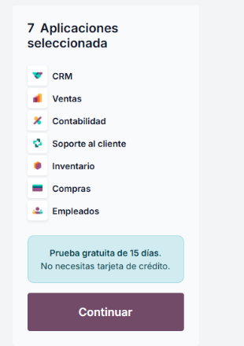
BPMN
El proceso muestra el flujo desde el pedido del cliente hasta la entrega del producto y el seguimiento postventa.
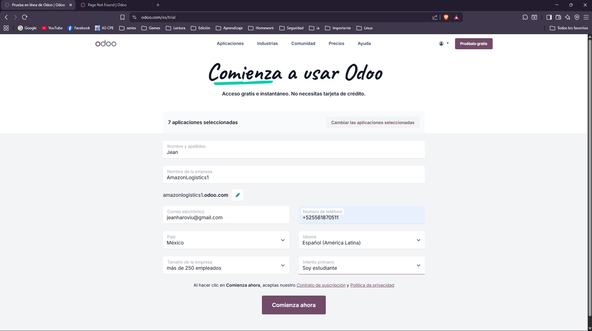
Entidad-relación
El modelo integra clientes, pedidos, ventas, costos, empleados y proveedores.
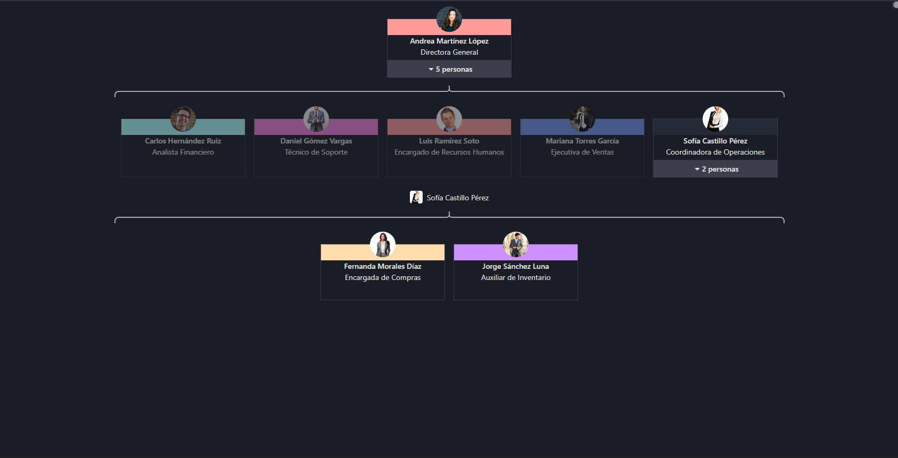
Predicción
Estima un crecimiento constante de las ventas.
y = mx + bRepresenta un crecimiento acelerado de la demanda.
y = ax² + bx + c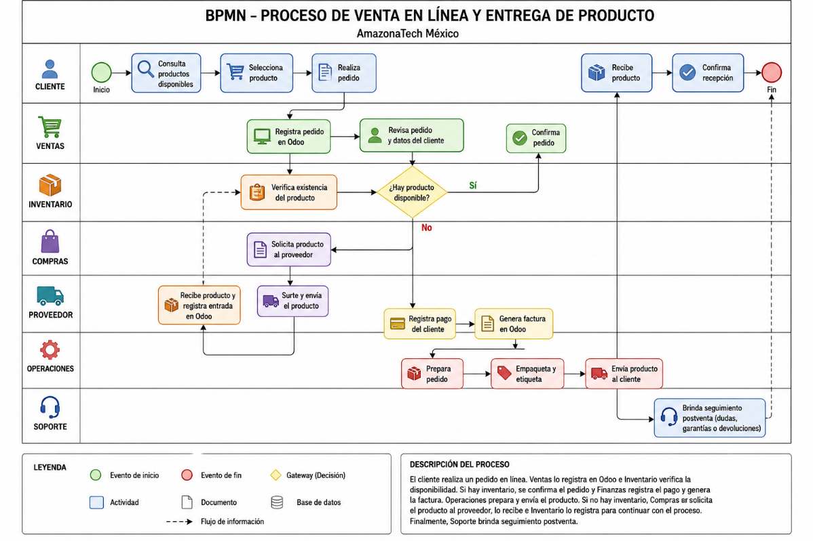
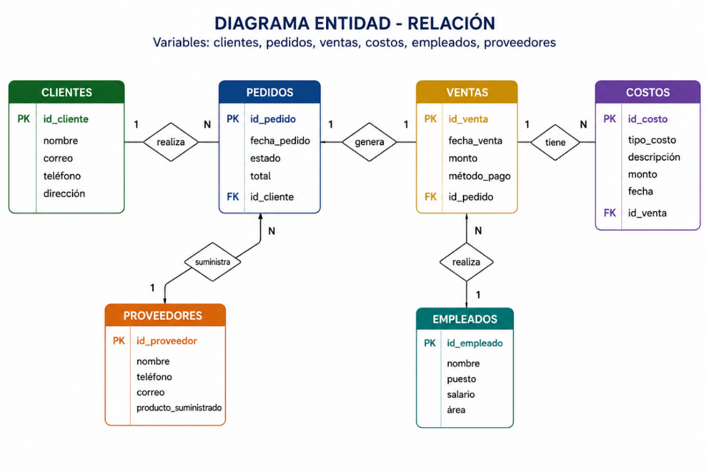
Demanda
El comportamiento de demanda muestra un crecimiento progresivo en la cantidad de pedidos. Este análisis permite planear mejor inventario, compras, operaciones y recursos dentro del ERP.
| Periodo | Demanda | Interpretación |
|---|---|---|
| Enero - Marzo | Baja / media | Inicio de operaciones y captación de clientes. |
| Abril - Junio | Media / alta | Aumento de pedidos y movimiento de inventario. |
| Julio - Agosto | Alta | Mayor demanda y necesidad de reabastecimiento. |
Datos en Odoo
Se registraron datos en CRM, ventas, inventario, compras, recursos humanos, contabilidad y proyectos.
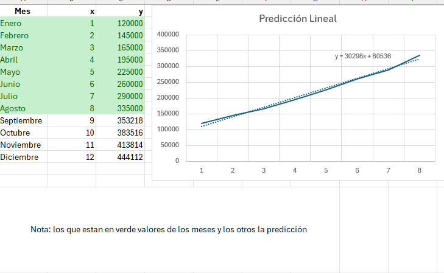
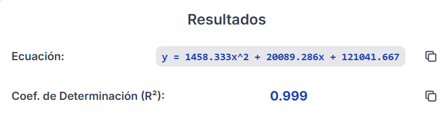
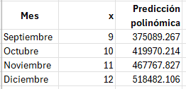
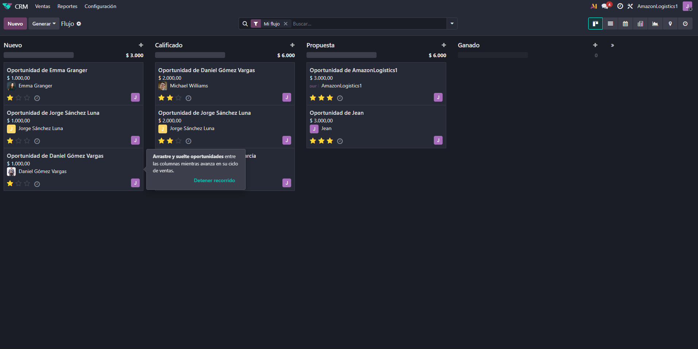
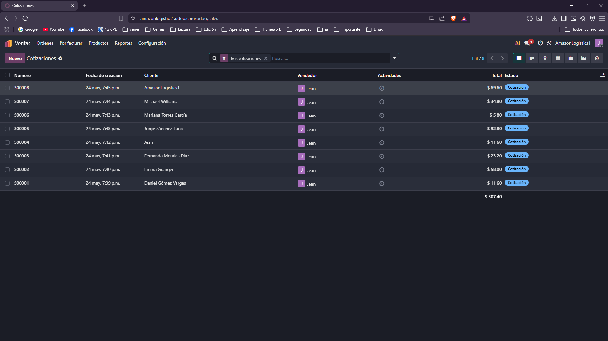
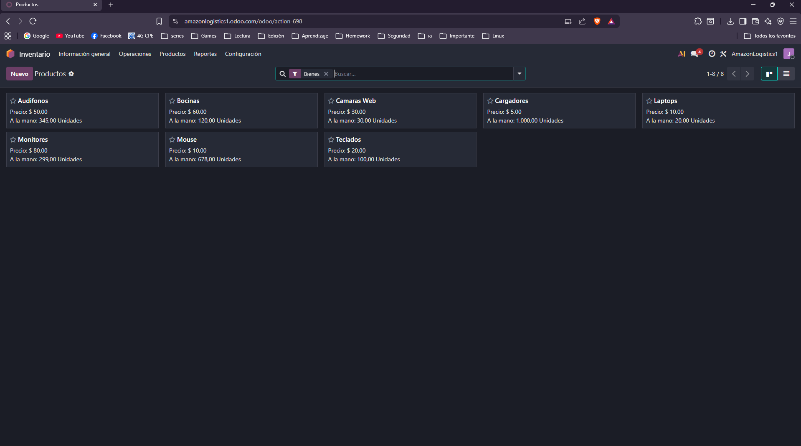
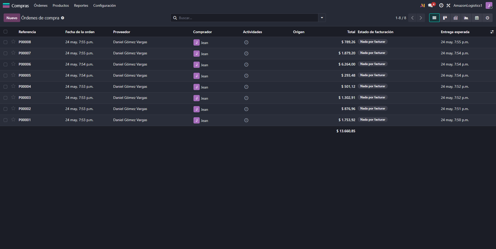
Conclusión
La implementación de Odoo ERP permitió organizar las áreas de la empresa y administrar ventas, inventario, compras y recursos humanos desde una sola plataforma. Además, el análisis de datos y las predicciones de demanda ayudan a mejorar la planeación de recursos y operaciones.